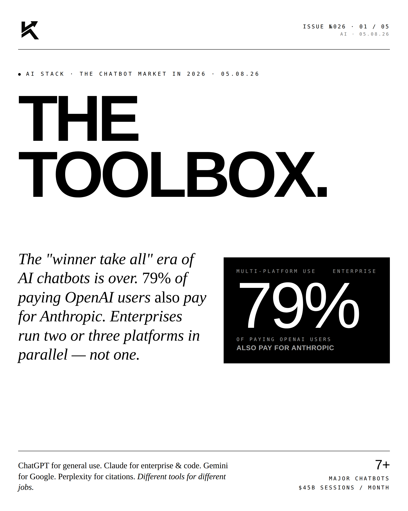
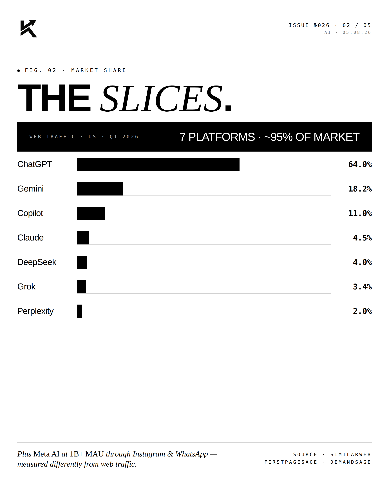
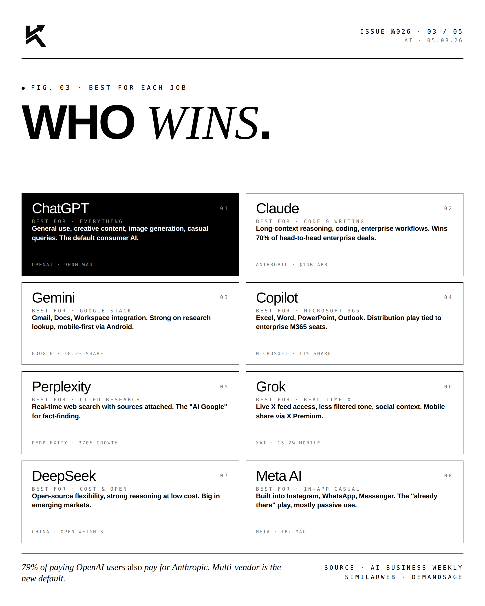
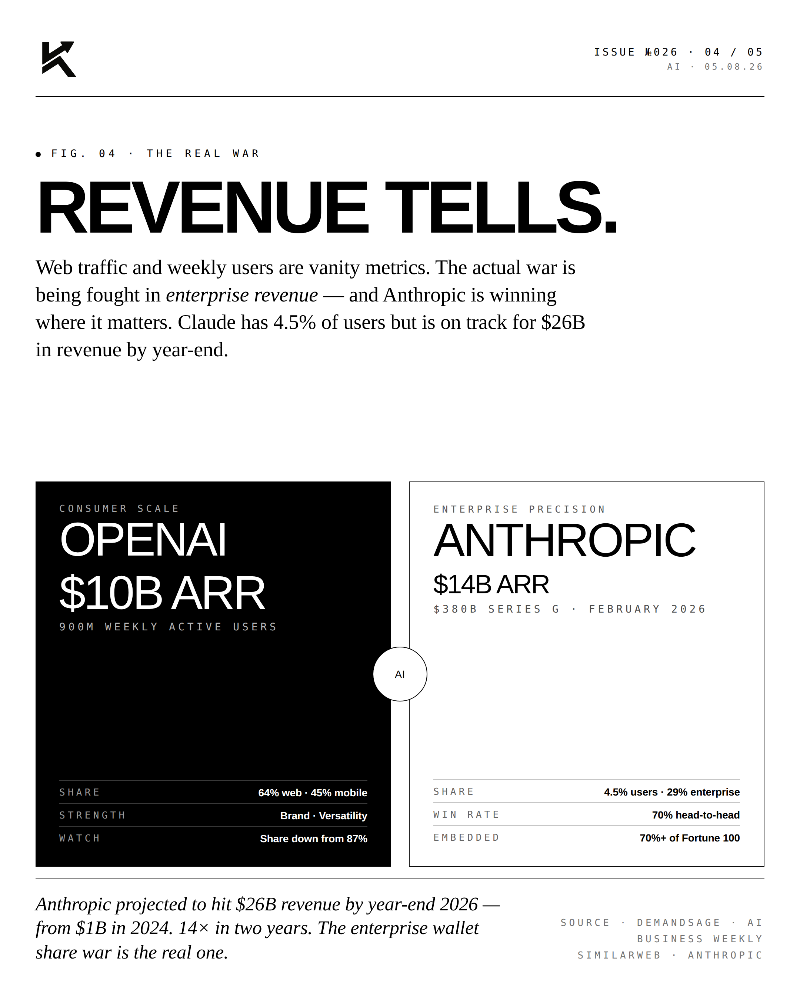
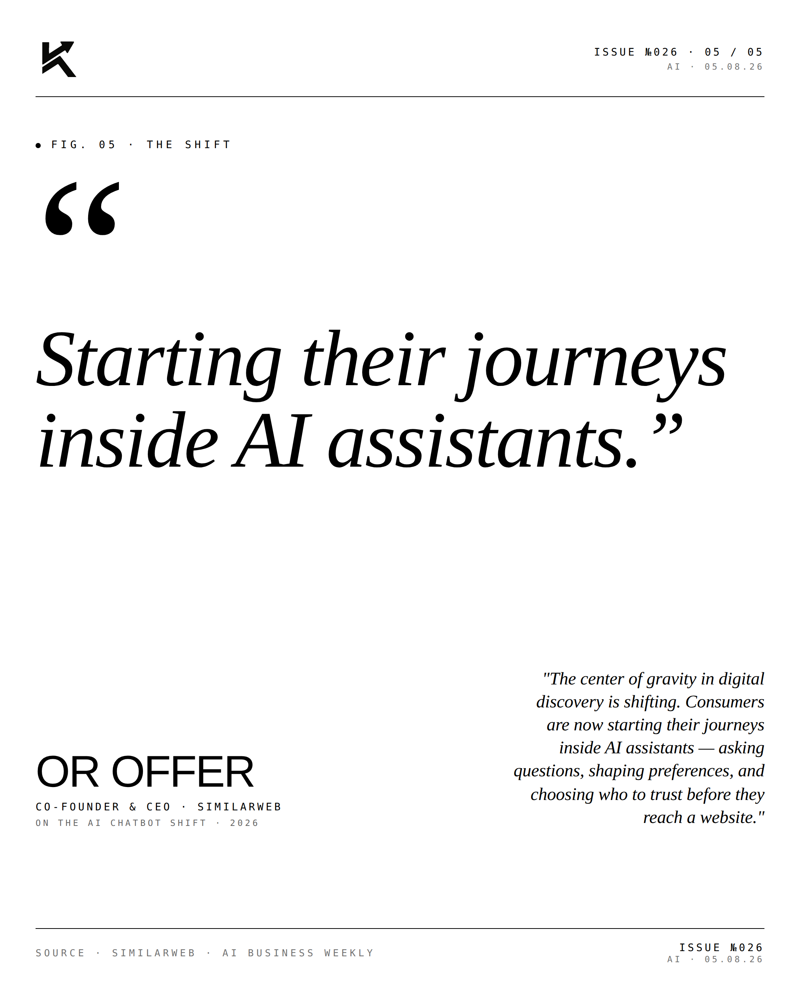

The Toolbox.
The "winner take all" era of AI chatbots is over. 79% of paying OpenAI users also pay for Anthropic. Enterprises run two or three platforms in parallel — not one.

The Slices.
ChatGPT's market share dropped from 87% to 60-68% in 12 months — the largest market share collapse in the history of generative AI. Q1 2026 web traffic share by platform:

- ChatGPT — 64% (down from 87% Jan 2025)
- Google Gemini — 18.2% (up from 5.4% — 370% growth YoY)
- Microsoft Copilot — 11%
- Anthropic Claude — 4.5%
- DeepSeek — 4%
- Grok (xAI) — 3.4% web, 15.2% mobile via X Premium bundle
- Perplexity — 2%
- Meta AI — 1B+ MAU via Instagram/WhatsApp/Messenger (measured differently)

Who Wins What.
Market share is the vanity metric. Use-case fit is what matters:

- ChatGPT — Best for general everything. Strongest consumer brand. 900M weekly active users.
- Claude — Best for code, writing, long-context reasoning, enterprise workflows. Wins ~70% of head-to-head enterprise deals against OpenAI. $14B ARR.
- Gemini — Best for Google ecosystem (Gmail, Docs, Workspace). Strong on research lookup. Mobile-first via Android.
- Copilot — Best for M365 power users. Excel, Word, PowerPoint, Outlook.
- Perplexity — Best for cited research. Real-time web with sources attached.
- Grok — Best for real-time X data, social context, less filtered tone.
- DeepSeek — Best for cost-conscious users. Open-source flexibility. Big in emerging markets.
- Meta AI — Best for casual users embedded in Instagram, WhatsApp, Messenger.

Revenue Tells.
Web traffic and weekly users are vanity metrics. The real war is being fought in enterprise revenue. OpenAI sits at ~$10B ARR. Anthropic at $14B ARR. Anthropic closed a Series G at a $380B valuation in February 2026. Anthropic has 4.5% of users but is winning ~70% of head-to-head enterprise deals — embedded in 70%+ of Fortune 100. The killer stat: 79% of paying OpenAI users also pay for Anthropic. The market has fragmented into three positions: consumer scale (ChatGPT), ecosystem distribution (Gemini, Copilot, Meta AI), and enterprise precision (Claude).
"Starting their journeys
inside AI assistants."OR OFFERCo-Founder & CEO · Similarweb · On the AI chatbot shift · 2026
"The center of gravity in digital discovery is shifting. Consumers are now starting their journeys inside AI assistants — asking questions, shaping preferences, and choosing who to trust before they reach a website."
The toolbox replaced the tool.
Disclosure
The author is a Limited Partner in 1789 Capital, which holds a position in xAI. Personal commentary and editorial analysis. Not investment advice, not an offer or solicitation.